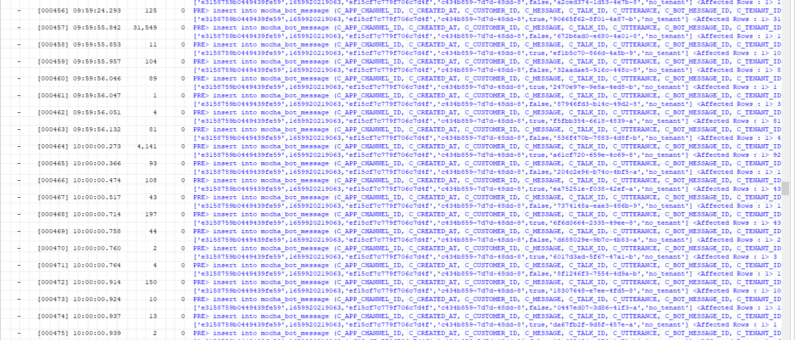
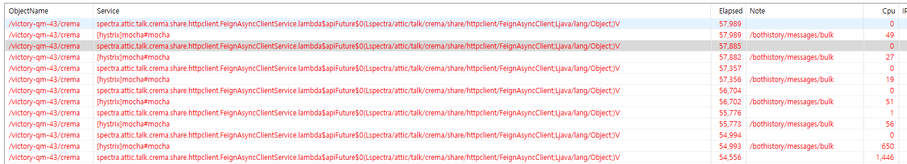
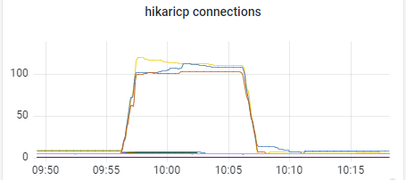
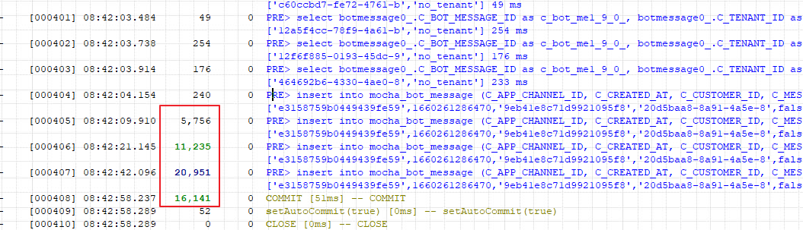
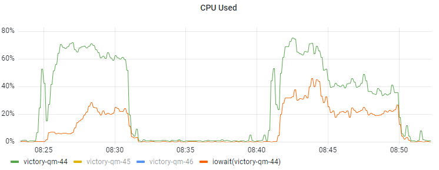
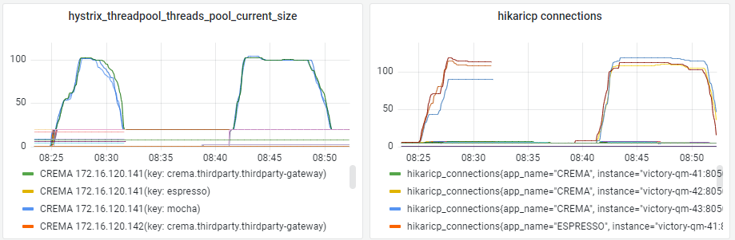

Jpa saveAll Stress Test Result
2022, Aug 12
jpa spring
부하 scenario
- tps20으로, 챗봇이력을 400개씩 전송한다.
- 서버 정보
- 4코어 하이퍼쓰레딩 → 8thread
problem
save → saveAll 로 변경해서 transaction을 하나로 줄였지만 오히려 오래 걸리는 케이스가 다수 발생
- elapsed = 174,283 ms
- sqlCount=1200, sqlTime=125,509 ms

• API서버에 지연이 발생함에 따라 호출했던 클라이언트 서버에도 지연이 발생되어, 새로운 메시지가 들어와도 wait 상태 발생

- 쿼리 로깅해보면 ProxyPreparedStatement.executeUpdate(ProxyPreparedStatement.java:61)를 타고 여러 row가 한개씩 insert되고 있다. —> batch가 적용된 것이 아니란 뜻
hu Aug 11 10:48:24 KST 2022 INFO: [FETCH] [Created on: Thu Aug 11 10:48:24 KST 2022, duration: 0, connection-id: 245, statement-id: 0, resultset-id: 0, at com.zaxxer.hikari.pool.ProxyPreparedStatement.executeUpdate(ProxyPreparedStatement.java:61)]
Thu Aug 11 10:48:24 KST 2022 INFO: [QUERY] insert into mocha_bot_message (C_APP_CHANNEL_ID, C_CREATED_AT, C_CUSTOMER_ID, C_MESSAGE, C_TALK_ID, C_UTTERANCE, C_BOT_MESSAGE_ID, C_TENANT_ID) values ('e3158759b0449439fe59b2edb32b4de91bce13fa', 1660 ... (truncated) [Created on: Thu Aug 11 10:48:24 KST 2022, duration: 1, connection-id: 246, statement-id: 0, resultset-id: 0, at com.zaxxer.hikari.pool.ProxyPreparedStatement.executeUpdate(ProxyPreparedStatement.java:61)]
Thu Aug 11 10:48:24 KST 2022 INFO: [FETCH] [Created on: Thu Aug 11 10:48:24 KST 2022, duration: 0, connection-id: 246, statement-id: 0, resultset-id: 0, at com.zaxxer.hikari.pool.ProxyPreparedStatement.executeUpdate(ProxyPreparedStatement.java:61)]
Thu Aug 11 10:48:24 KST 2022 INFO: [QUERY] insert into mocha_bot_message (C_APP_CHANNEL_ID, C_CREATED_AT, C_CUSTOMER_ID, C_MESSAGE, C_TALK_ID, C_UTTERANCE, C_BOT_MESSAGE_ID, C_TENANT_ID) values ('e3158759b0449439fe59b2edb32b4de91bce13fa', 1660 ... (truncated) [Created on: Thu Aug 11 10:48:24 KST 2022, duration: 1, connection-id: 248, statement-id: 0, resultset-id: 0, at com.zaxxer.hikari.pool.ProxyPreparedStatement.executeUpdate(ProxyPreparedStatement.java:61)]
Thu Aug 11 10:48:24 KST 2022 INFO: [FETCH] [Created on: Thu Aug 11 10:48:24 KST 2022, duration: 0, connection-id: 248, statement-id: 0, resultset-id: 0, at com.zaxxer.hikari.pool.ProxyPreparedStatement.executeUpdate(ProxyPreparedStatement.java:61)]
Thu Aug 11 10:48:24 KST 2022 INFO: [QUERY] insert into mocha_bot_message (C_APP_CHANNEL_ID, C_CREATED_AT, C_CUSTOMER_ID, C_MESSAGE, C_TALK_ID, C_UTTERANCE, C_BOT_MESSAGE_ID, C_TENANT_ID) values ('e3158759b0449439fe59b2edb32b4de91bce13fa', 1660 ... (truncated) [Created on: Thu Aug 11 10:48:24 KST 2022, duration: 0, connection-id: 245, statement-id: 0, resultset-id: 0, at com.zaxxer.hikari.pool.ProxyPreparedStatement.executeUpdate(ProxyPreparedStatement.java:61)]
Thu Aug 11 10:48:24 KST 2022 INFO: [FETCH] [Created on: Thu Aug 11 10:48:24 KST 2022, duration: 0, connection-id: 245, statement-id: 0, resultset-id: 0, at com.zaxxer.hikari.pool.ProxyPreparedStatement.executeUpdate(ProxyPreparedStatement.java:61)]
Thu Aug 11 10:48:24 KST 2022 INFO: [QUERY] insert into mocha_bot_message (C_APP_CHANNEL_ID, C_CREATED_AT, C_CUSTOMER_ID, C_MESSAGE, C_TALK_ID, C_UTTERANCE, C_BOT_MESSAGE_ID, C_TENANT_ID) values ('e3158759b0449439fe59b2edb32b4de91bce13fa', 1660 ... (truncated) [Created on: Thu Aug 11 10:48:24 KST 2022, duration: 2, connection-id: 246, statement-id: 0, resultset-id: 0, at com.zaxxer.hikari.pool.ProxyPreparedStatement.executeUpdate(ProxyPreparedStatement.java:61)]
Thu Aug 11 10:48:24 KST 2022 INFO: [QUERY] insert into mocha_bot_message (C_APP_CHANNEL_ID, C_CREATED_AT, C_CUSTOMER_ID, C_MESSAGE, C_TALK_ID, C_UTTERANCE, C_BOT_MESSAGE_ID, C_TENANT_ID) values ('e3158759b0449439fe59b2edb32b4de91bce13fa', 1660 ... (truncated) [Created on: Thu Aug 11 10:48:24 KST 2022, duration: 2, connection-id: 248, statement-id: 0, resultset-id: 0, at com.zaxxer.hikari.pool.ProxyPreparedStatement.executeUpdate(ProxyPreparedStatement.java:61)]
Thu Aug 11 10:48:24 KST 2022 INFO: [QUERY] insert into mocha_bot_message (C_APP_CHANNEL_ID, C_CREATED_AT, C_CUSTOMER_ID, C_MESSAGE, C_TALK_ID, C_UTTERANCE, C_BOT_MESSAGE_ID, C_TENANT_ID) values ('e3158759b0449439fe59b2edb32b4de91bce13fa', 1660 ... (truncated) [Created on: Thu Aug 11 10:48:24 KST 2022, duration: 1, connection-id: 245, statement-id: 0, resultset-id: 0, at com.zaxxer.hikari.pool.ProxyPreparedStatement.executeUpdate(ProxyPreparedStatement.java:61)]
Thu Aug 11 10:48:24 KST 2022 INFO: [FETCH] [Created on: Thu Aug 11 10:48:24 KST 2022, duration: 0, connection-id: 246, statement-id: 0, resultset-id: 0, at com.zaxxer.hikari.pool.ProxyPreparedStatement.executeUpdate(ProxyPreparedStatement.java:61)]
Thu Aug 11 10:48:24 KST 2022 INFO: [FETCH] [Created on: Thu Aug 11 10:48:24 KST 2022, duration: 0, connection-id: 248, statement-id: 0, resultset-id: 0, at com.zaxxer.hikari.pool.ProxyPreparedStatement.executeUpdate(ProxyPreparedStatement.java:61)]
Thu Aug 11 10:48:24 KST 2022 INFO: [FETCH] [Created on: Thu Aug 11 10:48:24 KST 2022, duration: 0, connection-id: 245, statement-id: 0, resultset-id: 0, at com.zaxxer.hikari.pool.ProxyPreparedStatement.executeUpdate(ProxyPreparedStatement.java:61)]
Thu Aug 11 10:48:24 KST 2022 INFO: [QUERY] insert into mocha_bot_message (C_APP_CHANNEL_ID, C_CREATED_AT, C_CUSTOMER_ID, C_MESSAGE, C_TALK_ID, C_UTTERANCE, C_BOT_MESSAGE_ID, C_TENANT_ID) values ('e3158759b0449439fe59b2edb32b4de91bce13fa', 1660 ... (truncated) [Created on: Thu Aug 11 10:48:24 KST 2022, duration: 0, connection-id: 246, statement-id: 0, resultset-id: 0, at com.zaxxer.hikari.pool.ProxyPreparedStatement.executeUpdate(ProxyPreparedStatement.java:61)]
Thu Aug 11 10:48:24 KST 2022 INFO: [QUERY] insert into mocha_bot_message (C_APP_CHANNEL_ID, C_CREATED_AT, C_CUSTOMER_ID, C_MESSAGE, C_TALK_ID, C_UTTERANCE, C_BOT_MESSAGE_ID, C_TENANT_ID) values ('e3158759b0449439fe59b2edb32b4de91bce13fa', 1660 ... (truncated) [Created on: Thu Aug 11 10:48:24 KST 2022, duration: 0, connection-id: 248, statement-id: 0, resultset-id: 0, at com.zaxxer.hikari.pool.ProxyPreparedStatement.executeUpdate(ProxyPreparedStatement.java:61)]
Thu Aug 11 10:48:24 KST 2022 INFO: [QUERY] insert into mocha_bot_message (C_APP_CHANNEL_ID, C_CREATED_AT, C_CUSTOMER_ID, C_MESSAGE, C_TALK_ID, C_UTTERANCE, C_BOT_MESSAGE_ID, C_TENANT_ID) values ('e3158759b0449439fe59b2edb32b4de91bce13fa', 1660 ... (truncated) [Created on: Thu Aug 11 10:48:24 KST 2022, duration: 0, connection-id: 245, statement-id: 0, resultset-id: 0, at com.zaxxer.hikari.pool.ProxyPreparedStatement.executeUpdate(ProxyPreparedStatement.java:61)]
결과적으로 pool max 발생

try1..
saveAll로 multi-row에 대한 insert를 호출하려면 설정이 필요하다.
- 배치를 사용할 경우 설정이 추가로 필요하다..
spring.jpa.properties.hibernate.jdbc.batch_size=100
spring.jpa.properties.hibernate.order_inserts=true (if inserts)
OR
spring.jpa.properties.hibernate.order_updates=true (if updates)
- jdbc 연결할 때도 url에 쿼리를 줘야 한다.
:: postgresql
jdbc:postgresql://localhost:5432/db?reWriteBatchedInserts=true
:: mysql
jdbc:mysql://localhost:3366/db?rewriteBatchedStatements=true
- 배치 쿼리 로그를 보려면, hibernate.show_sql: true로 안된다.
jdbc:mysql://localhost:3366/db?rewriteBatchedStatements=true&profileSQL=true&c=Slf4JLogger&maxQuerySizeToLog=200
적용 결과, ProxyStatement.executeBatch(ProxyStatement.java:128)에 의해 400개의 row가 한번 실행되었음을 알 수 있다.
Thu Aug 11 14:28:25 KST 2022 INFO: [FETCH] [Created on: Thu Aug 11 14:28:25 KST 2022, duration: 0, connection-id: 781, statement-id: 0, resultset-id: 0, at com.zaxxer.hikari.pool.ProxyPreparedStatement.executeQuery(ProxyPreparedStatement.java:52)]
Thu Aug 11 14:28:25 KST 2022 INFO: [QUERY] select botmessage0_.C_BOT_MESSAGE_ID as c_bot_me1_9_0_, botmessage0_.C_TENANT_ID as c_tenant2_9_0_, botmessage0_.C_APP_CHANNEL_ID as c_app_ch3_9_0_, botmessage0_.C_CREATED_AT as c_create4_9_0_, botmes ... (truncated) [Created on: Thu Aug 11 14:28:25 KST 2022, duration: 0, connection-id: 781, statement-id: 0, resultset-id: 0, at com.zaxxer.hikari.pool.ProxyPreparedStatement.executeQuery(ProxyPreparedStatement.java:52)]
Thu Aug 11 14:28:25 KST 2022 INFO: [FETCH] [Created on: Thu Aug 11 14:28:25 KST 2022, duration: 0, connection-id: 781, statement-id: 0, resultset-id: 0, at com.zaxxer.hikari.pool.ProxyPreparedStatement.executeQuery(ProxyPreparedStatement.java:52)]
Thu Aug 11 14:28:25 KST 2022 INFO: [QUERY] insert into mocha_bot_message (C_APP_CHANNEL_ID, C_CREATED_AT, C_CUSTOMER_ID, C_MESSAGE, C_TALK_ID, C_UTTERANCE, C_BOT_MESSAGE_ID, C_TENANT_ID) values ('e3158759b0449439fe59b2edb32b4de91bce13fa', 1660 ... (truncated) [Created on: Thu Aug 11 14:28:25 KST 2022, duration: 182, connection-id: 781, statement-id: 0, resultset-id: 0, at com.zaxxer.hikari.pool.ProxyStatement.executeBatch(ProxyStatement.java:128)]
Thu Aug 11 14:28:25 KST 2022 INFO: [FETCH] [Created on: Thu Aug 11 14:28:25 KST 2022, duration: 0, connection-id: 781, statement-id: 0, resultset-id: 0, at com.zaxxer.hikari.pool.ProxyStatement.executeBatch(ProxyStatement.java:128)]
Thu Aug 11 14:28:25 KST 2022 INFO: [QUERY] commit [Created on: Thu Aug 11 14:28:25 KST 2022, duration: 0, connection-id: 781, statement-id: -1, resultset-id: 0, at com.zaxxer.hikari.pool.ProxyConnection.commit(ProxyConnection.java:387)]
Thu Aug 11 14:28:25 KST 2022 INFO: [FETCH] [Created on: Thu Aug 11 14:28:25 KST 2022, duration: 0, connection-id: 781, statement-id: -1, resultset-id: 0, at com.zaxxer.hikari.pool.ProxyConnection.commit(ProxyConnection.java:387)]
Thu Aug 11 14:28:25 KST 2022 INFO: [QUERY] SET autocommit=1 [Created on: Thu Aug 11 14:28:25 KST 2022, duration: 0, connection-id: 781, statement-id: -1, resultset-id: 0, at com.zaxxer.hikari.pool.ProxyConnection.setAutoCommit(ProxyConnection.java:414)]
try1 - problem
batch_size를 100으로 하고 다시 성능테스트 진행한 결과



- 결과
- elapsed = 206,338 ms
- sqlCount=405, sqlTime=206,022 ms
- 트랜잭션 수는 줄어들었지만 오히려 수행시간이 증가
- db io wait 증가
try1 - result
- 초당 20에 대한 부하테스트를 장비 스펙부터 변경하고 다시 테스트해보는 것으로 하고 푸시는 보류
try2..
- DB서버 장비만 다르게 해서 동일 부하 시나리오 테스트
- DB서버 스펙
- 기존) 4core 8thread
- 변경) 12core 12thread / 32GB
try2 - result
- max 200초가 넘던 것이 평균 17초로 개선된 결과를 받을 수 있었다.
- db cpu 12core
- elapsed = 17,696 ms
- sqlCount=405, sqlTime=17,420 ms
reference
| [Spring JPA Batch Insert 과연 생각대로 동작할까? | Carrey`s 기술블로그](https://jaehun2841.github.io/2020/11/22/2020-11-22-spring-data-jpa-batch-insert/#hibernate-order-inserts-hibernate-order-updates) |
JdbcTemplate의 Batch Insert 구현시, rewriteBatchedStatements 옵션을 true로 설정하여 성능 문제 해결
| [Batch Insert 성능 향상기 1편 - With JPA - Yun Blog | 기술 블로그](https://cheese10yun.github.io/jpa-batch-insert/) |